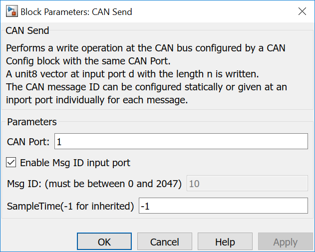
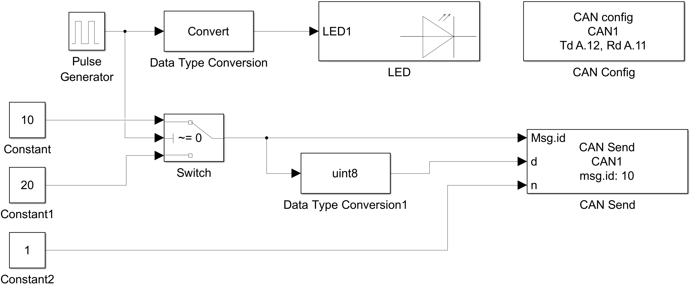

5.5.3. CAN Send
5.5.3.1. Description
This block writes one or multiple bytes to the CAN instance specified with CAN Port with the given message ID.
A vector of values at input port d and the data length taken from input port n is used to send a CAN message. The message ID can be a block parameter or is read from an input port.
{kind=link}
{kind=link}
5.5.3.2. Data Type Support
The msg.id port expects an uint16 data type.
The d port expects an uint8 data type.
The n port expects an uint32 data type.
Warning
A CAN message can only utilize up to 8 bytes per message.
5.5.3.3. Parameters Dialog Box
CAN Port
Specifies an internally used CAN bus number. It is used to generate unique instance names when more CAN busses are included in the same model and to tie config, read and write blocks together.
Msg ID
Sets the message ID the CAN message is send with.
5.5.3.4. Example
In the example in each step a CAN message is send using alternating message IDs 10 and 20. The CAN message content is the message id as a one byte message.
{kind=link}
Please see more Examples shown in CAN Config documentation.
5.5.3.5. Code Generation
Instance names of mbed CAN classes are created by concatenating can and <CAN Port>.
Step Function
creates one line in void <Model Name>_step(void) function
can<CAN Port>.write(CANMessage(<msg id>,*<message data >,<message length n>));
The <msg id> comes statically from a block parameter or is message individual from an block input port